Menu: Treinamento · Situação do manual: Em ajuste · Fonte dos prints: versão nova.
Para que serve
Cadastra os motivos pelos quais uma área pode pedir um treinamento. Cada motivo tem Descrição (obrigatória), Observação (opcional) e a marca Ativo. Na Solicitação Treinamento o campo "Motivo da solicitação" é obrigatório e só oferece motivos ativos. Os motivos que a empresa deve usar não vêm da tela: ponto para validar com a Qualidade.
Antes de começar (o que precisa existir)
| O que precisa existir | Para quê | Onde se cadastra |
|---|---|---|
| Permissão da tela no perfil | Abrir e gravar. A tela abre para perfis sem permissão, mas o servidor recusa a gravação | Administração do módulo Principal |
| Descrição ainda não usada | A tela recusa descrição repetida | Esta tela |
Passo a passo
- Abrir e pesquisar. No menu Treinamento, abra Motivo de Treinamento. O quadro Pesquisa tem Código, Descrição e Ativo (TODAS, SIM, NÃO) e os botões PESQUISAR, LIMPAR e IMPRIMIR; o link verde Incluir abre o formulário. A lista traz CÓDIGO, DESCRIÇÃO, ATIVO, EDITAR, EXCLUIR e LOG. A busca ignora maiúsculas, mas não ignora acento ("acao" não acha "AÇÃO"). A lista tem 10 linhas por página, com paginação quando há mais registros, como no Tipo de Treinamento; a busca "T." devolveu 8 linhas, sem paginação (conferido em 17/11/2026).
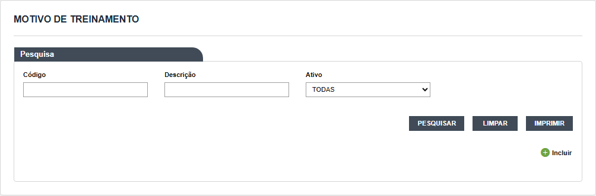
A imagem mostra o título "MOTIVO DE TREINAMENTO", o quadro Pesquisa e a área da lista vazia.
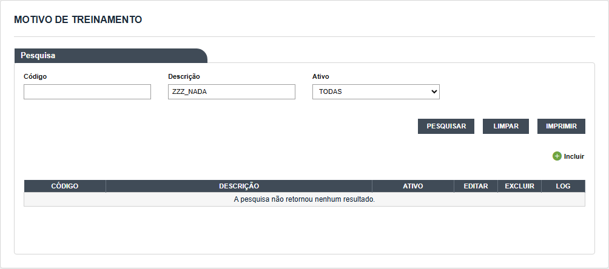
Quando nada é encontrado, a tela mostra "A pesquisa não retornou nenhum resultado.".
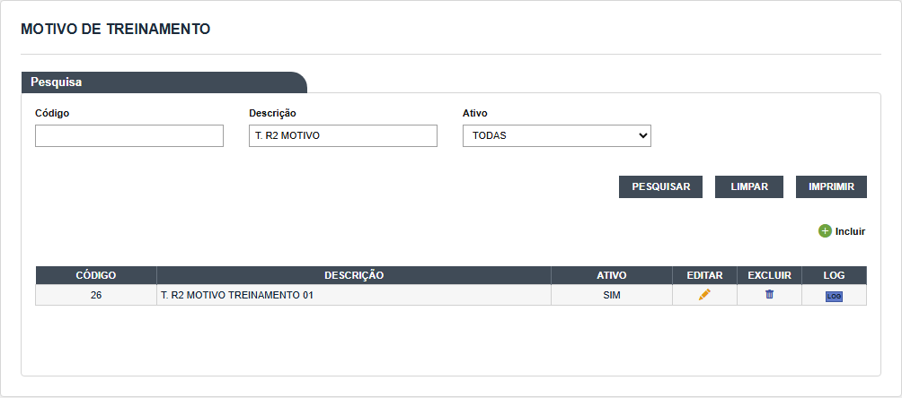
A imagem mostra a lista depois de pesquisar, com a linha do motivo e os ícones Editar, Excluir e Log. Motivos já em uso por uma solicitação também mostram a lixeira (conferido em 17/11/2026 com um motivo em uso por solicitação PENDENTE; imagem no passo 7).
- Incluir. Clique em Incluir. O quadro Edição tem Código e Data bloqueados, Descrição*, Ativo* (já vem em Sim) e Observação, com os botões VOLTAR, LIMPAR e SALVAR.
A imagem mostra o título "MOTIVO DE TREINAMENTO", o formulário vazio e Ativo = Sim.
- Salvar vazio. SALVAR sem preencher mostra a faixa "Preencha os campos obrigatórios antes de salvar." e, sob a Descrição, "A descrição é obrigatória e deve ter no máximo 255 caracteres." (o mesmo texto do Tipo de Treinamento).
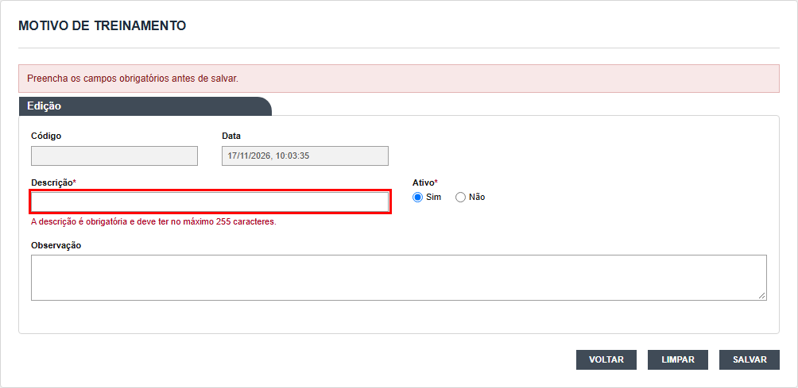
A imagem mostra a faixa vermelha e o aviso sob o campo Descrição.
- Preencher e salvar. Preencha a Descrição (até 255 caracteres) e, se quiser, a Observação (até 4.000 caracteres) e clique em SALVAR. O sistema pergunta "Confirma a inclusão do item?"; com SIM, mostra "Inclusão realizada com sucesso!". Depois do OK, a tela volta sozinha à pesquisa, com os filtros vazios.
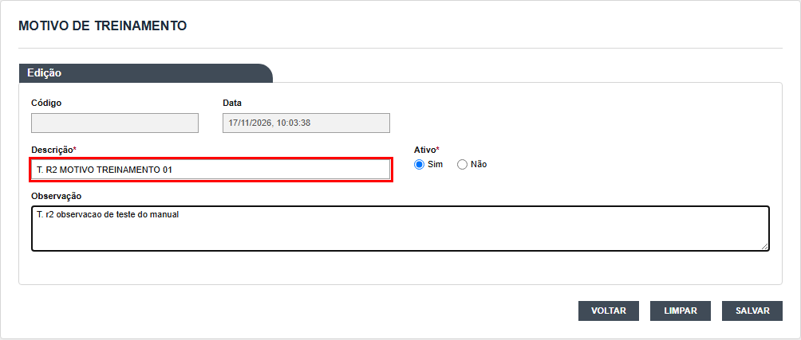
A imagem mostra o formulário preenchido antes de salvar.
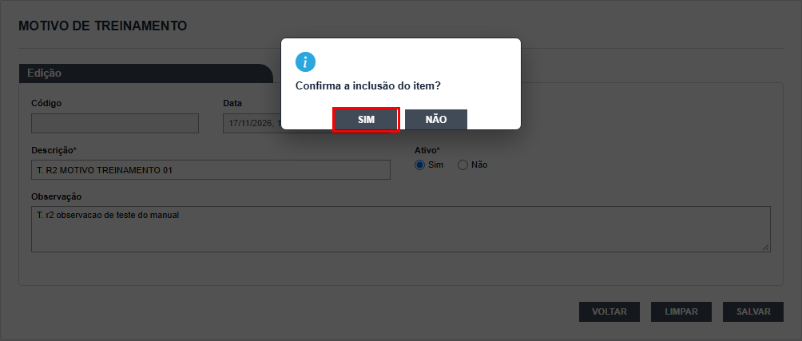
A imagem mostra a caixa "Confirma a inclusão do item?".
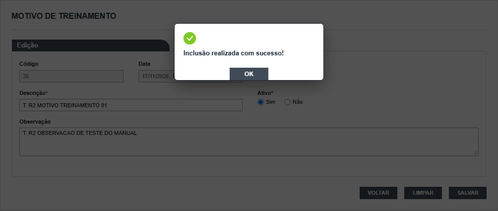
A imagem mostra "Inclusão realizada com sucesso!" com o botão OK e, ao fundo, o formulário com o Código gerado.
A imagem mostra o quadro Pesquisa, sem lista, depois do OK.
A imagem mostra a lista com o motivo recém-criado (código 26).
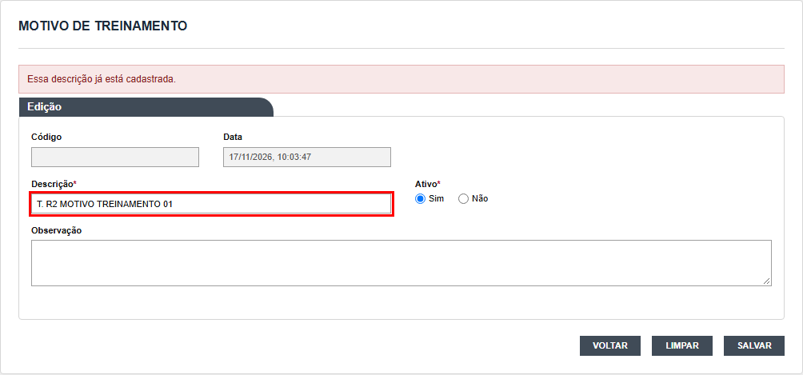
Com uma descrição já cadastrada, a faixa diz "Essa descrição já está cadastrada.".
- Alterar ou inativar. Clique no lápis, mude o dado ou marque Ativo = Não e clique em SALVAR. O sistema pergunta "Confirma a alteração do item?"; com SIM, abre a janela Justificativa (obrigatória, "A justificativa é obrigatória e deve ter no máximo 255 caracteres." se vazia); com o texto, mostra "Alteração realizada com sucesso!". Ao reabrir o registro, o campo Data mostra a hora 3 horas à frente (DV-GQ-N-030).
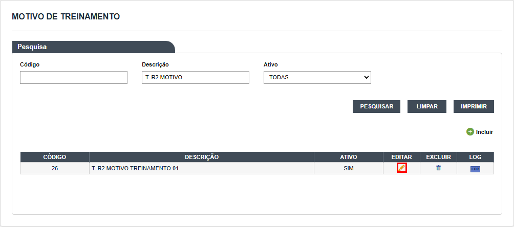
A imagem mostra a lista com o lápis (Editar) da linha.
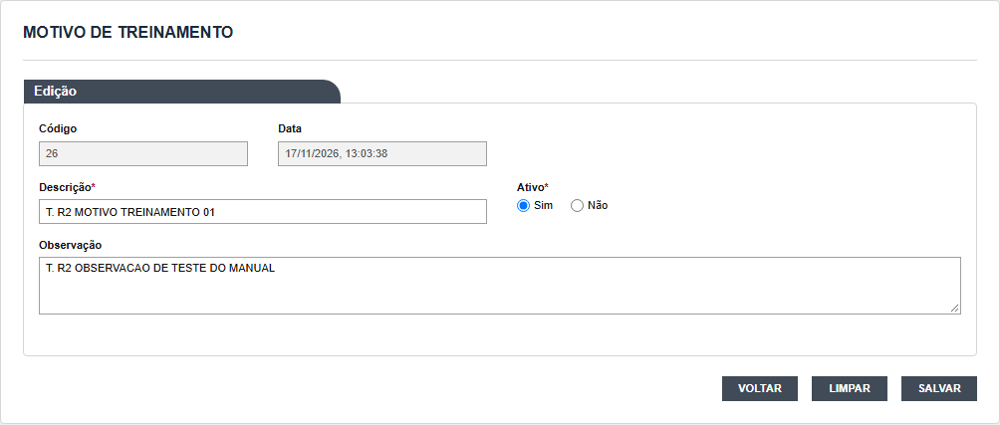
A imagem mostra o formulário de alteração do motivo 26; o campo Data mostra 13:03, três horas à frente de quando o registro foi criado (10:03).
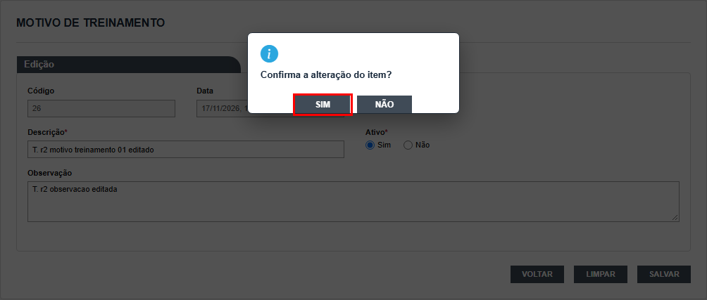
A imagem mostra a caixa "Confirma a alteração do item?".
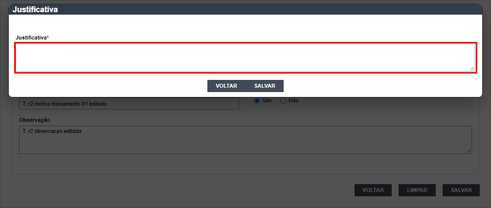
A imagem mostra a janela Justificativa da alteração.
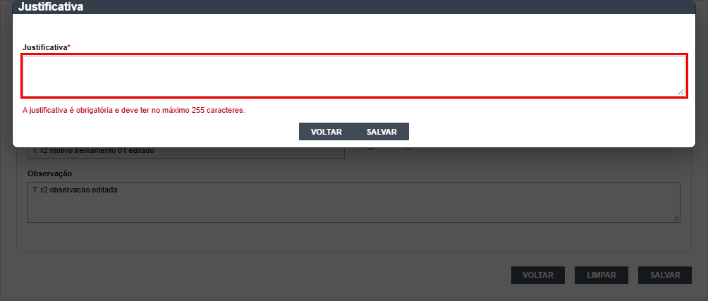
A imagem mostra a janela recusando salvar sem texto.
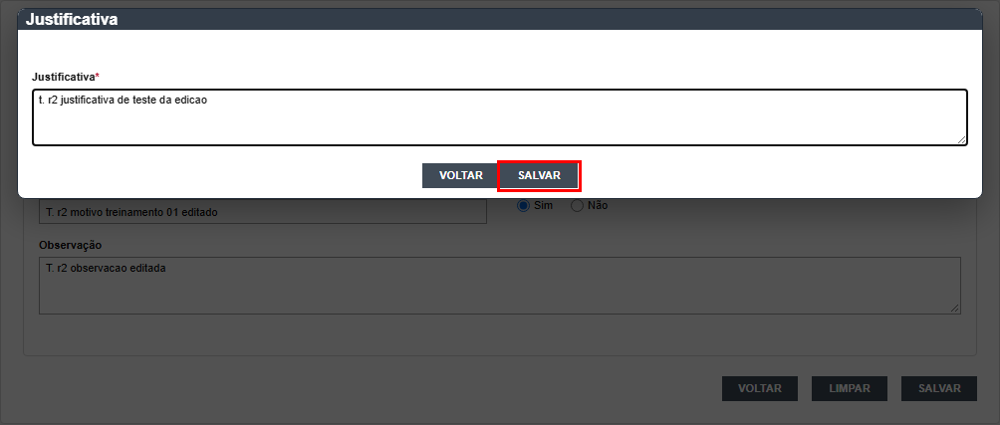
A imagem mostra a justificativa digitada.
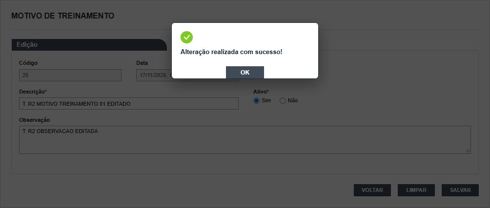
A imagem mostra "Alteração realizada com sucesso!".
A imagem mostra a lista com a descrição alterada.
Para inativar, marque Ativo = Não e salve com justificativa. Na lista, o motivo inativo aparece com "NAO" sem acento na coluna ATIVO (DV-GQ-N-052).
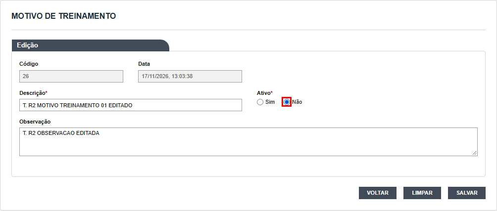
A imagem mostra o formulário com Ativo = Não marcado.
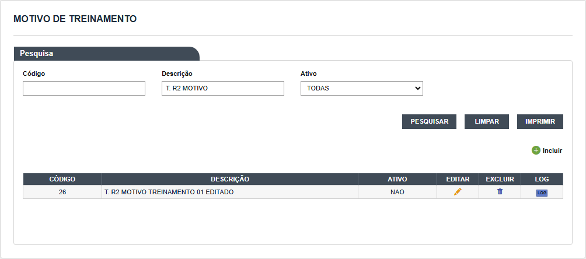
A imagem mostra o motivo 26 com ATIVO = "NAO" na lista.
- Ver o histórico. Clique em LOG. Feche com o botão FECHAR.
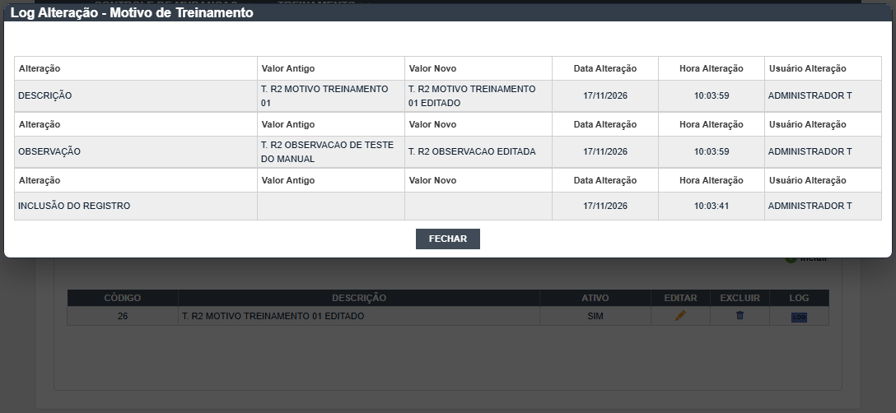
A imagem mostra "Log Alteração - Motivo de Treinamento": as mudanças de DESCRIÇÃO e OBSERVAÇÃO (valor antigo e novo), data, hora e usuário, e a linha "INCLUSÃO DO REGISTRO". Não há linha de Justificativa: o texto digitado na alteração não aparece em lugar nenhum (DV-GQ-N-018, confirmada em 17/11/2026, Alta; no Tipo de Treinamento a linha existe).
- Excluir. Clique na lixeira. A página Exclusão mostra os campos travados e os botões VOLTAR e EXCLUIR.
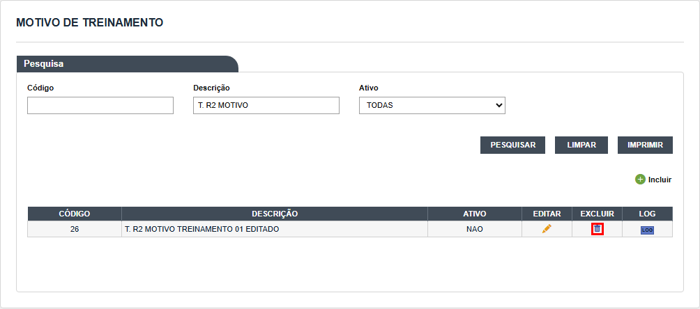
A imagem mostra a lista com a lixeira (Excluir) da linha.
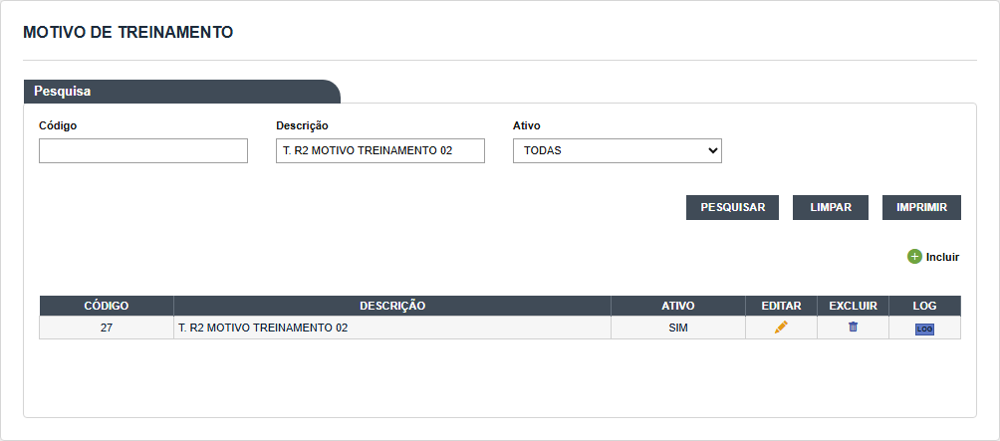
A imagem mostra o motivo 27, em uso por uma solicitação PENDENTE, com os ícones Editar, Excluir e Log: a lixeira não some (ao contrário do Tipo de Treinamento em uso).
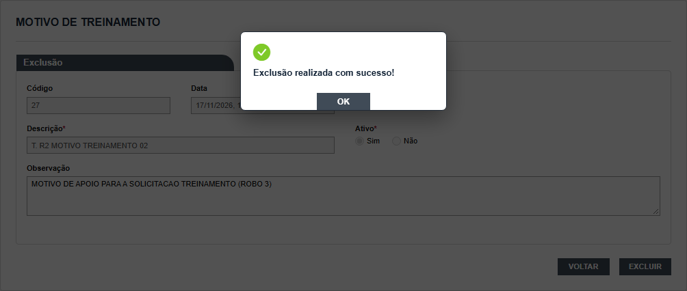
A imagem mostra o resultado de excluir esse motivo em uso: "Exclusão realizada com sucesso!", sem nenhuma recusa (DV-GQ-N-041 e DV-GQ-N-032, provadas em 17/11/2026).
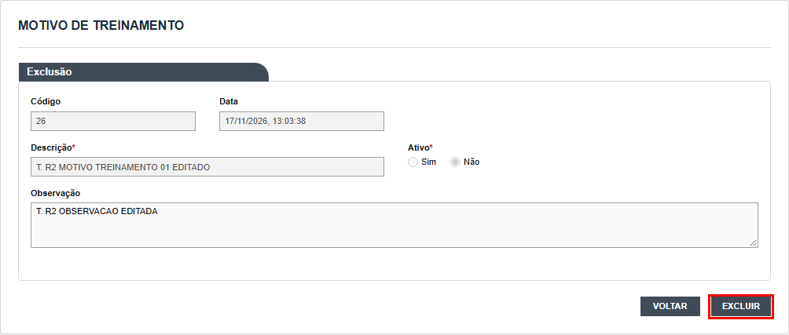
A imagem mostra o título "MOTIVO DE TREINAMENTO" (o título correto também nesta tela, DV-GQ-N-025) e o quadro "Exclusão" com os dados bloqueados.
Em EXCLUIR o sistema pergunta "Confirma a exclusão do item?", abre a janela Justificativa e, com o texto, mostra "Exclusão realizada com sucesso!". Depois de excluído, não há como ver o histórico do motivo: o registro some da lista e não há LOG para clicar (DV-GQ-N-027, confirmada).
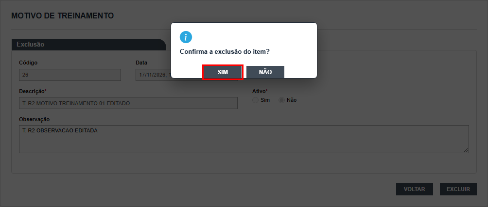
A imagem mostra a pergunta "Confirma a exclusão do item?".
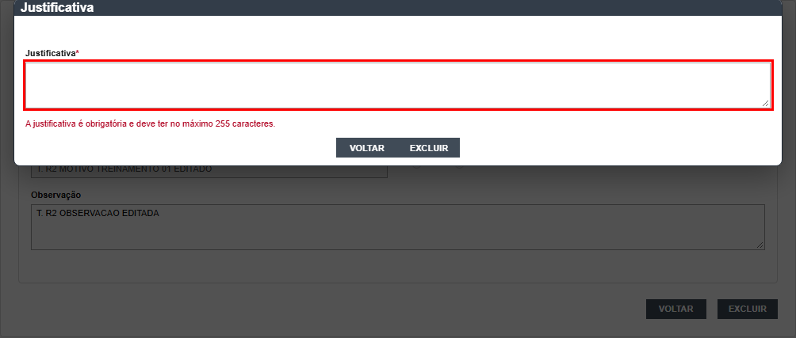
A imagem mostra a justificativa da exclusão recusada sem texto.
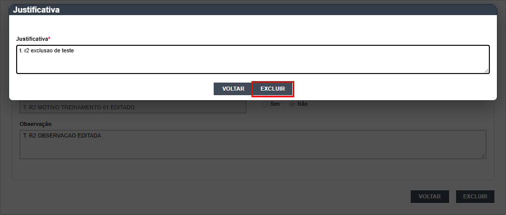
A imagem mostra a justificativa da exclusão preenchida.
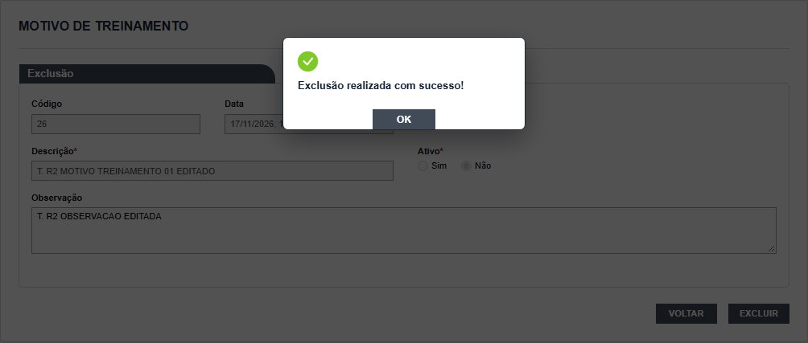
A imagem mostra "Exclusão realizada com sucesso!".

A imagem mostra a tela de pesquisa sem lista depois da exclusão.
- Imprimir. IMPRIMIR gera o PDF "LISTAGEM DE MOTIVO DE TREINAMENTO" com data, usuário e o filtro usado, e as colunas CÓDIGO, DESCRIÇÃO, OBSERVAÇÃO e ATIVO (o PDF do Tipo não tem Observação). O canto superior esquerdo traz o quadro "SUA LOGO AQUI" (DV-GQ-N-051). Não há botão de Excel.
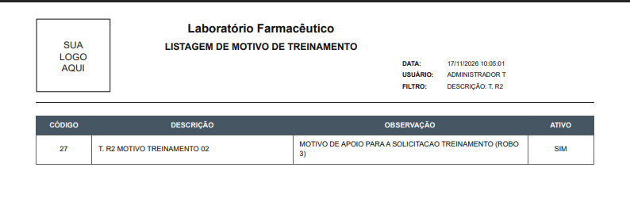
A imagem mostra o PDF da listagem com o filtro "DESCRIÇÃO: T. R2".
Ícones e botões da lista
| Ícone | O que faz |
|---|---|
| Lápis (Editar) | Abre o motivo para alterar ou inativar |
| Lixeira (Excluir) | Abre a exclusão. Aparece também em motivo em uso (ao contrário do Tipo) |
| LOG | Abre o histórico (não abre depois de excluído) |
Botões e ações
| Botão | Onde | O que faz |
|---|---|---|
| PESQUISAR, LIMPAR, IMPRIMIR, Incluir | Lista | Pesquisa, limpa, gera o PDF "LISTAGEM DE MOTIVO DE TREINAMENTO" (com Observação), abre o formulário |
| FECHAR | Janela do histórico | Fecha o histórico |
| VOLTAR, LIMPAR, SALVAR | Formulário | Sai, esvazia, grava (confirmação e, na alteração, justificativa) |
| VOLTAR, EXCLUIR | Página Exclusão | Sai, pede confirmação e justificativa |
Mensagens do sistema
| Mensagem | Quando |
|---|---|
| Preencha os campos obrigatórios antes de salvar. | Campo obrigatório vazio |
| Essa descrição já está cadastrada. | Descrição repetida |
| A descrição é obrigatória e deve ter no máximo 255 caracteres. | Descrição vazia |
| A justificativa é obrigatória e deve ter no máximo 255 caracteres. | Justificativa vazia |
| A pesquisa não retornou nenhum resultado. | Pesquisa sem registros |
| Confirma a inclusão / alteração / exclusão do item? | Ao salvar ou excluir |
| Inclusão / Alteração / Exclusão realizada com sucesso! | Gravação feita |
| Motivo de treinamento não encontrado. | Solicitação cujo motivo foi excluído |
| Acesso negado ao módulo. | Perfil sem permissão |